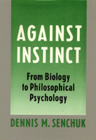

<body bgcolor="#FFFFFF" text="#000000" link="#0000FF" vlink="#CC0000" alink="#CC0000"><center><hr width="350" size="1" align="center" noshade>A skeptical critique of the rampant nativism of the behavioral and cognitive sciences<hr width="350" size="1" align="center" noshade><p><a href="https://cdcshoppingcart.uchicago.edu/Cart/ChicagoBook.aspx?ISBN=9780877228158&&PRESS=temple" target="_top">Buy this book!</a> | <a href="https://cdcshoppingcart.uchicago.edu/Cart/Cart.aspx?PRESS=temple" target="_top">View Cart</a> | <a href="https://cdcshoppingcart.uchicago.edu/Cart/Cart.aspx?PRESS=temple" target="_top">Check Out</a></p><p></p></center><!--none//--><h1>Against Instinct</h1>
<H2>From Biology to Philosophical Psychology</H2>
<h3>Dennis M. Senchuk</h3>
<P>cloth 0-87722-815-9 $54.95, Sep 91, <FONT COLOR=#990033>Out of Print</FONT>
<BR> 200 pp
</P><BLOCKQUOTE><I>"</I>Against Instinct<I> is well organized, nicely argued, and extraordinarily well-written. This book will be a challenge to the dominant view. Among its virtues is the author's rich use of philosophical and other sources; his use of image is wonderful throughout. Its readership should include philosophers of psychology, mind, action, biology, and science as well as those interested in the prospects of AI work. Philosophers will learn some psychology; psychologists might learn some philosophy."</I>
<br>&#151<b>Don Gustafson</b>, University of Cincinnati<I></I></BLOCKQUOTE>
<p>Are we genetically programmed to behave as we do and to learn what we do? is human control over human destiny biologically and, ultimately, physically predetermined? Is our ability to vary ad lib the amount and direction of our personal efforts an idle illusion? Against Instinct challenges recent philosophy’s all too common "Yes, but" answers to these questions. In this skeptical critique of the rampant nativism of the behavioral and cognitive sciences, Dennis M. Senchuk confronts the full range of experimental and bio-theoretical supports for the claim of instinct. Instead of arguing in favor of nurture over nature, he reorients this perennial controversy along a different axis. In the process, Senchuk propounds and defends a novel, radically non-nativistic philosophy of action and of mind.
<BR>&nbsp;<h2>Contents</h2><P>
<p>Preface
<br>Acknowledgments
<p><b>Part I: The Scientific Quest for Instinct</b>
<p>1. The Slippery Notion of Behavioral Innateness
<br><I>Snarled Criteria of Innate Behavior &#149
A Forthright Experiment, Some Possibly Crooked Facts &#149
The Intimacy of Learning and Genetic Decoding &#149
Information as the Innate Component of Behavior &#149
Adaptive Behavior, Sign Stimuli, and Information &#149
Evolution and Information Theory &#149
Behavioral Images of the Environment &#149
The Uninformed Elasticity of Supposedly Innate Behavior &#149
Rigidity as a Possible Criterion of Innateness</I>
<p>2. Theoretically Questionable Experimental Support for Instinct
<br><I>Problematic Applications of the Deprivation Experiment &#149
Tangled Environmental Influences upon the Development of Behavior &#149
Theoretical Insights Bearing on Inductive Failures to Identify Innate Behavior &#149
Instincts as Behavioral Impulses &#149
The Presumable Omnipresence of Environmental Determination &#149
Relations between Learning and Orientation Mechanisms &#149
Efforts to Individuate Simple Movements &#149
A Phenomenological Defense of Animal Intelligence &#149
Manifest versus Scientific Images of Intelligent Behaviors of Behavior &#149
Intelligence as an Alternative to Instinct and to Learning &#149
Computer Simulations and the Faculty of Intellect &#149
The Process and the Products of Intelligence &#149
The Role of Problem Grasping in Genuinely Intelligent Functioning &#149
Dualism, Mechanism, and the Hypothesis of Genuine Intelligence</I>
<p>3. Two Psychophilosophical Theories of Intelligence
<br><I>Reintroducing Gestalt Theory: Koffka on Instinct as a Prelude to Intelligence &#149
The Problem of Intelligence: To Grasp Ideas as Solutions &#149
The Supposed Continuity of Instinct and Intelligence &#149
Free Dynamics, Particular Constraints &#149
A Dynamic Model of Attention &#149
Goal Seeking as Stress Directed &#149
Beyond the Present, toward the Absent &#149
Dewey's Naturalistic Standpoint &#149
Habits &#149
Dewey's Seamless Web: Experience without Representation &#149
Figuratively Stirred to Consciousness &#149
Impulse as against Instinct &#149
The Infant's Need for Social Commerce &#149
The Mystery of Deliberation &#149
Crossed Purposes: Dewey's Concession to Instinct</I>
<br>4. The Epigenesis of Behavior
<br><I>Kuo's Epigenetic Standpoint &#149
The Concept and Theory of Behavioral Gradients &#149
The Concept and Theory of Behavioral Potentials &#149
The Diminution of Plasticity Thesis &#149
Epigenesis as Historicism: Laws and Other Patterns of Development &#149
Habituation and Diminution: Deweyan Prospects for Kuo's Theory &#149
Patterning and Reduced Plasticity &#149
Social and Structural-Functional Influences on Plasticity &#149
Kuo's Program of Charting Ranges of Behavioral Potentials &#149
Rethinking the Role of the Brain in Behavior &#149
Jensen's Research Program: Comparative Harmony, Ethological Discord &#149
Chief Epigenetic Challenges to the Ethological Enterprise</I>
Part II: Philosophical Remonstrances
<p>5. Plasticity, Teleology, and Instinct
<br><I>S-R Theoretic Plasticity &#149
Epigenetic Plasticity &#149
Teleological Plasticity &#149
Reasonable Assignments of Teleology &#149
The Conceptual Compatibility between Plasticity and Instinct</I>
<p>6. Intelligent Behavior, Purposiveness, and Consciousness
<br><I>Intelligent Habits and Capacities: From Dewey to Ryle &#149
Somewhere between Episodes and Dispositions &#149
Further Features of Rylean Frames of Mind &#149
Introducing </I>Conscious Readiness<I> &#149
The Role of Conscious Readiness in Purposive Behavior</I>
<p>7. The Functionalistic Turn of Recent Philosophical Psychology
<br><I>Ryle's Credentials as a Functionalist &#149
Artificial Intelligence as a Reductio ad Absurdum of Functionalism &#149
The Elusive Functioning of Conscious Readiness &#149
The Strange Fellowship of Turing Machines &#149
Isomorphic Oddities &#149
Some Philosophical Merits of Functionalism</I>
<p>8. The Possibility of Teleological Flexibility
<br><I>Variously Realized Teleological Schemes &#149
Automata, Performers and Composers &#149
Intelligence as Opposed to Instinct &#149
The Phenomenon of Intentionality &#149
Brute Thoughts &#149
Stretching toward Goal-Objects</I>
<p>9. A Credible Alternative to Instinct
<br><I>Vestiges of Nativism in Flexible Behavioral Tendencies &#149
Minimizing Instinctivity without Destroying Flexibility &#149
The Image of Consciousness in Action &#149
The Role Played by Conscious Readiness &#149
Consciousness in Development &#149
Consciousness as Active Prehensiveness &#149
Native Conscious Readiness: A Concession to Leibniz?</I>
<p>10. Beyond Nature-Nurture, But Nature Above All
<br><I>Depolarization of Fate and Freedom &#149
Creedal Determinism &#149
Interrogating Bergson's Argument for Vitalism &#149
A Denial of Supervenience: Neutral Monism and Psychological Indeterminacy &#149
Russell's Causal Skeleton: Destiny and Hierarchical Determination &#149
The Closed System and Its Enemy: Popper on Downward Causation and Deep Indeterminacy &#149
Consciousness Naturalized: Supervenience without Physical Determinism</I>
<p>11. Final Reckoning
<br><I>The Dual-Aspect Nightmare &#149
The Case against Psychological Functionalism &#149
Nature and Fate: Some Consequences of the Principle of Sufficient Reason &#149
Toward a Methodological Reconciliation with the Scientific Image &#149
Emergent Indeterminacy and Unified Science: Some Neurological Speculations &#149
Prospects for Further Research on Flexible Functioning &#149
Beyond the Bounds: Sociobiological Constraints on Being Human &#149
Flexibility as Fate</I>
<p>Notes
<br>Index
</P><BR>&nbsp;<H2>About the Author(s)</H2>
<table><tr><td valign="top"><img src="/tempress/authors/795_au.gif" height="90" width="75"></td><td width="100%" valign="middle"><p><b>Dennis M. Senchuk</b> is Associate Professor of Philosophy at Indiana University.</P></td></tr></table>
<BR><H2>Subject Categories</H2>
<p><A HREF="/tempress/philosophy.html" TARGET="_top">Philosophy and Ethics</a>
</p>
<p align="center"><a href="https://cdcshoppingcart.uchicago.edu/Cart/ChicagoBook.aspx?ISBN=9780877228158&&PRESS=temple" target="_top">Buy this book!</a> | <a href="https://cdcshoppingcart.uchicago.edu/Cart/Cart.aspx?PRESS=temple" target="_top">View Cart</a> | <a href="https://cdcshoppingcart.uchicago.edu/Cart/Cart.aspx?PRESS=temple" target="_top">Check Out</a></p><p><font face="Arial" size="1"><a href="copyright.html" onMouseOver="window.status='Web Copyright Policy';return true;" onMouseOut="window.status=''" title="Web Copyright Policy">&copy;</a> 2015 <a href="http://www.temple.edu" target="new" onMouseOver="window.status='Link to Temple University home page';return true;" onMouseOut="window.status=''" title="Link to Temple University home page">Temple University</a>. All Rights Reserved. http://www.temple.edu/tempress/titles/795_reg.html</font></p>